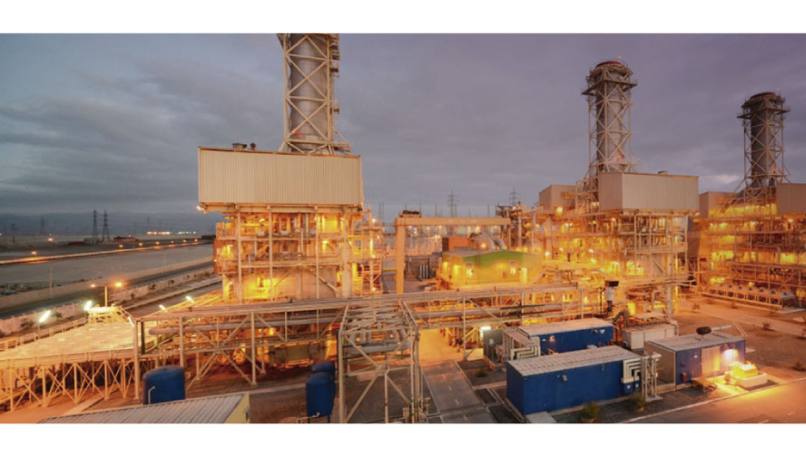

Potencialmente, debido a que la central Atacama utiliza gas como combustible, podría ser la primera en incorporal en su combustible gaseoso al hidrógeno como tal. En el mundo ya han comenzado algunos pilotos de reemplazo de parte del gas natural por hidrógeno como es el caso de la empresa General Electric gas power, la que, en abril del 2022 en la terminal de energía del Long Ridge, completó la etapa de demostración del uso de mezclas de hidrógeno con combustible para turbinas en un rango entre 5% a 20% de hidrógeno en volumen.